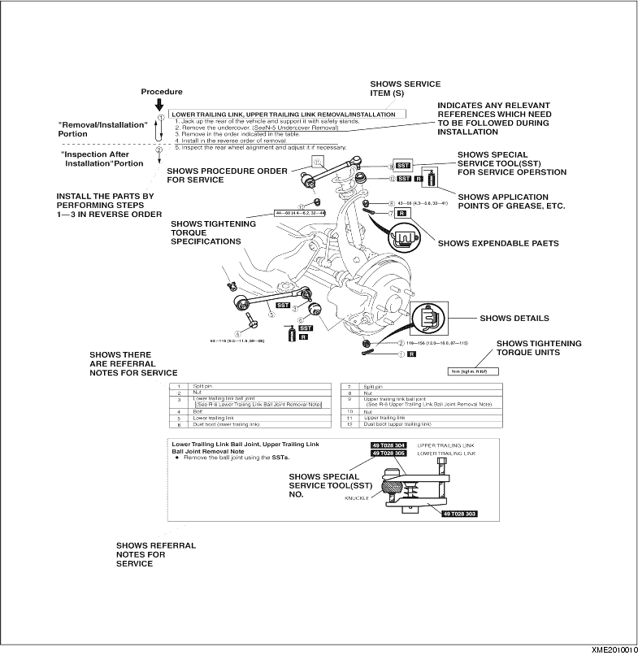

• Inspection and adjustment procedures are divided into steps. Important points regarding the location and contents of the procedures are explained in detail and shown in the illustrations.
1. Most repair operations begin with an overview illustration. It identifies the components, shows how the parts fit together and describes visual part inspection. However, only removal/installation procedures that need to be performed methodically have written instructions.
2. Expendable parts, tightening torques and symbols for oil, grease, and sealant are shown in the overview illustration. In addition, symbols indicating parts requiring the use of special service tools or equivalent are also shown.
3. Procedure steps are numbered and the part that is the main point of that procedure is shown in the illustration with the corresponding number. Occasionally, there are important points or additional information concerning a procedure. Refer to this information when servicing the related part.
